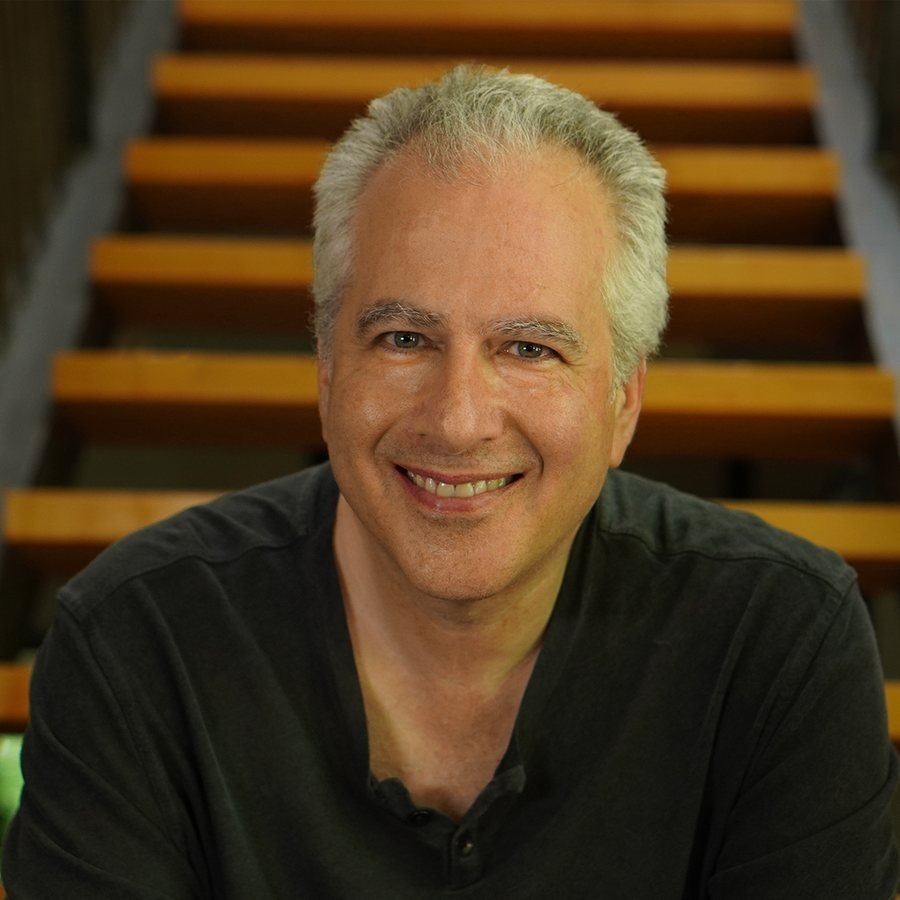
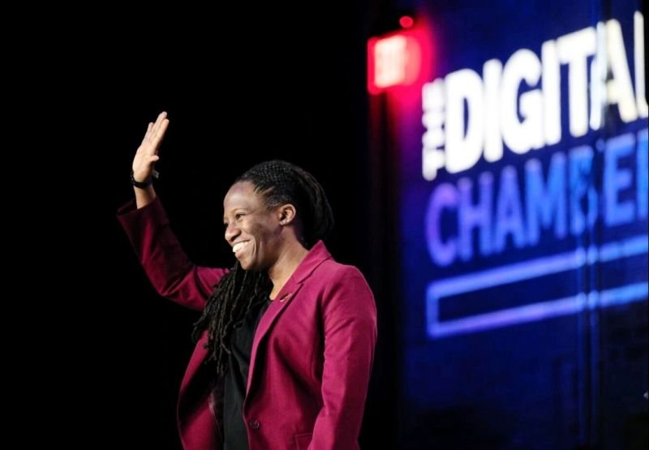
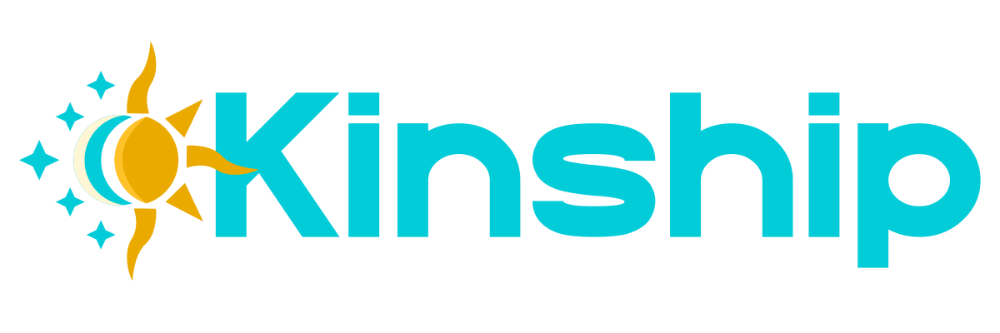
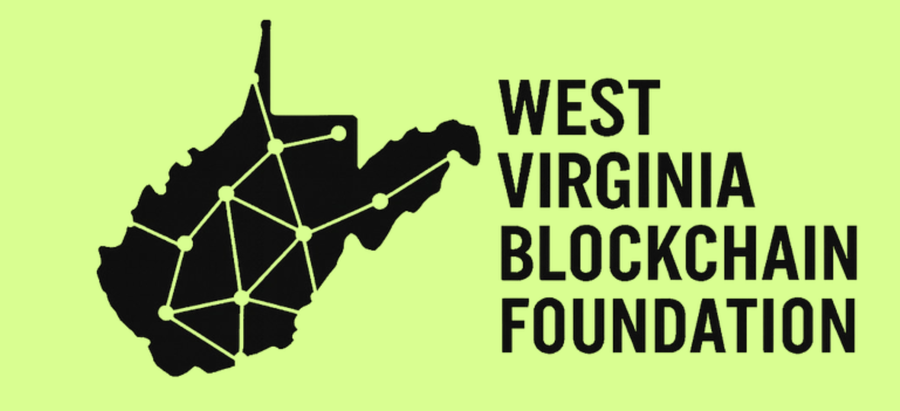
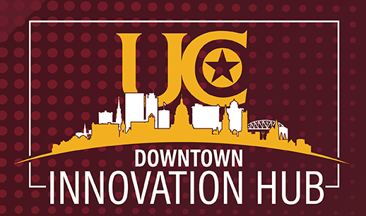

Events · Local and Global
The shape of the summer.
It opens with a celebration in Charleston and global livestream on the day the law goes live, runs ten weeks of building in the open, and closes with a conference in September.
It opens with a celebration in Charleston and global livestream on the day the law goes live, runs ten weeks of building in the open, and closes with a conference in September.
Celebrating the day the WV DUNA Act goes into effect, at the State Capitol Rotunda in Charleston. Come in person or join from anywhere in the world.
The West Virginia DUNA Act takes effect at midnight. By morning, we're gathered at the Capitol and on YouTube Live to mark it together — and to file the first DUNAs in history registered with a public office, live in the Rotunda under the Capitol Dome.
Live on stage, WV Secretary of State Kris Warner will register the first DUNAs under the new law, establishing the legal foundation for a future in which creative humans and intelligent agents can collaborate with shared purpose, clear authority, and real accountability.
The people who made this possible — and the people who will build what comes next.
West Virginia's Secretary of State, whose office holds the registry for every DUNA filed in the state.
The delegate who championed the WV DUNA Act through the legislature and brought it to the Governor's desk.

Advancing identity, authority, and accountability for humans and AI agents to cooperate at global scale and machine speed.

Connecting West Virginia students, policymakers, builders, and industry leaders to develop the infrastructure and talent for the digital economy.
Creating durable systems of identity, recognition, and mutual support for veterans, first responders, and the communities they serve.
Small business owner (brick and mortar retail), part-time fairy, writer, crafter, storyteller, thinker.
Entrepreneurs, founders, creators, community leaders, educators, and builders come together to transform missions into movements and ideas into enduring institutions. Over the summer, participants explore, design, launch, and grow their own DUNAs alongside a global community pioneering new forms of organization, governance, and collaboration.
Part research lab, part startup accelerator, part governance experiment, and part cultural movement, the Dunathon invites people from around the world to explore what comes next. Members investigate breakthroughs in governance, technology, culture, and economics, share what they learn, and collectively govern every aspect of the program.
Rather than relying on outside judges, members decide what matters. Through market-based governance, participants direct funding, reward contributions, and help shape ideas, projects, and alliances into lasting institutions.
A competition governed by cooperation. The Dunathon isn’t just about studying new organizational models—it’s about practicing them. Members directly shape the program’s priorities, treasury, awards, and outcomes through transparent, market-based decision making.
Part summit, part learning lab, part showcase, and part reunion, Kiduna Live brings together founders, builders, creators, researchers, and allies from around the world. Participants share breakthroughs, demonstrate what they’ve built, compare approaches, forge new alliances, and help shape what comes next.
Summer Cohort DUNAs regroup to evaluate their progress, refresh their strategies, recruit new members, and prepare for their next chapter. At the same time, the Autumnal Dunathon opens its doors, welcoming a new generation of founders ready to turn missions into institutions.
The event concludes with the Kiduna Awards, celebrating the people, projects, and organizations advancing the frontiers of the Agentic Age.
How DUNAs make decisions, pass proposals, and govern themselves without a central authority.
How tokens, treasuries, and decision markets distribute resources and align incentives across members.
How communities form identity, share norms, and build durable trust inside decentralized organizations.
How agentic AI and the blockchain stack work together to give DUNAs memory, capability, and a tamper-proof record.
The Dunathon is supported by organizations that believe all people should have the tools and support we need to create the world we want for ourselves, our communities, and our future. Together, they provide the expertise, infrastructure, and connections needed to turn ideas into lasting institutions.

An independent 501(c)(3) ensuring the agentic AI era serves the wellbeing, autonomy, and prosperity of people and communities the market would otherwise pass over.

Building the relationships, knowledge, and infrastructure needed to position West Virginia at the forefront of blockchain and emerging technologies.

The Business Accelerator Program supports entrepreneurs, innovators, and community builders with the mentorship, connections, and resources needed to launch and grow impactful ventures across West Virginia.
The Dunathon is a DUNA, built, guided, and governed by its members.
All decisions are made by Dunathon members. No outside judges, no organizing committee with a veto. The members run this.
Whether you join a DUNA or start a DUNA, you'll be governing a new kind of organization, raising capital, building powerful agents, and shaping the Intelligence Age.
Every action serves an important mission, increases your ability to make a difference, and builds a resource base for long-term flourishing.
Back what you believe in and share in the outcome. You can participate fully as a member of any DUNA that stirs your passion.
Information, tools, and resources are shared across DUNAs. This is more of a collaboration than a competition.
Build as an Alliance for as long as you want. You can spin out your DUNA as an independent organization at any time.
There is no cap on how many DUNAs you can start or join. Raise as much money as you want and take it as far as you can go.
You don’t need to be an engineer, researcher, fintech guru, lawyer, economist, or governance theorist to participate.
Every member receives help from intelligent agents designed to teach, coach, organize, research, and create alongside you. Human mentors, founders, and community guides are available throughout the Dunathon to answer questions, offer feedback, and support you along the way.
Learn the basics, meet your first Allies, and find a mission, project, or community that interests you.
Launch a mission, movement, organization, or venture using proven templates and guided workflows. No technical experience required.
Learn how communities make decisions, allocate resources, and coordinate action through transparent, participatory governance.
Connect with other founders, contributors, and DUNAs to share knowledge, resources, opportunities, and support.
Turn ideas into action, bring people together around a mission, and create lasting value in the world.
Your Allies will walk beside you as you explore new frontiers of creativity, collaboration, and human potential.